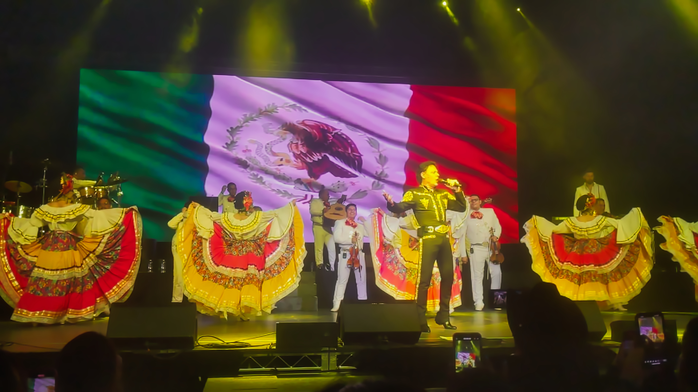
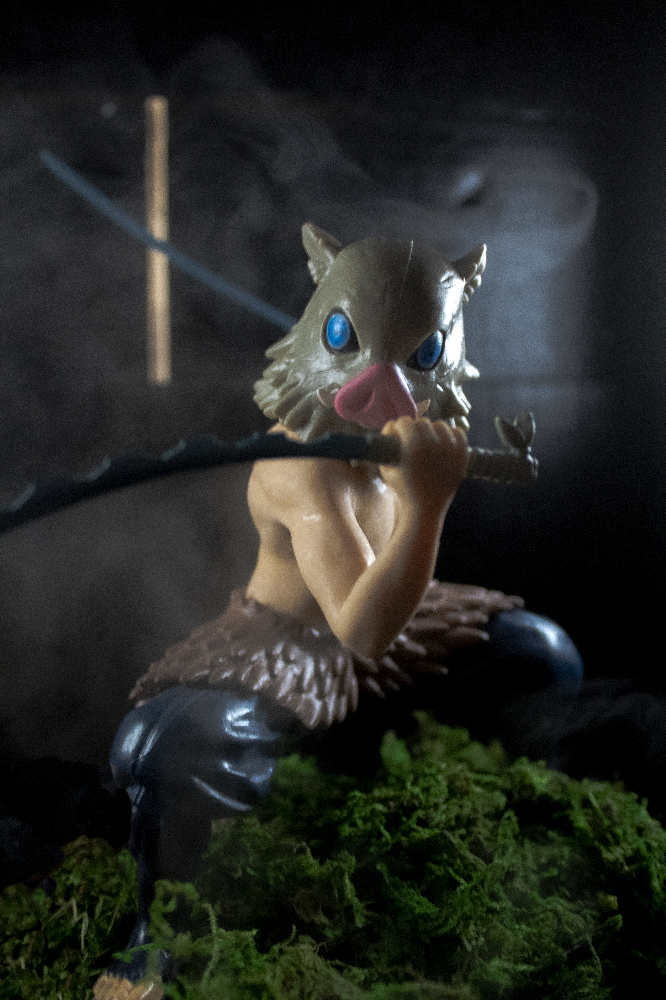

Pedro Fernandez by Javier Santana
Pedro Fernández, born José Martín Cuevas Cobos in 1969 in Guadalajara, Jalisco, is a celebrated Mexican singer, songwriter, and actor, widely recognized as one of the leading figures in mariachi and ranchera music. He began his career as a child, gaining fame with the iconic song “La de la Mochila Azul,” which showcased his emotive voice and natural stage presence. Over the decades, Fernández has released numerous albums and hit singles that blend traditional Mexican sounds with heartfelt storytelling, earning him both national and international acclaim. Beyond his music, he has also acted in films and television, further cementing his status as a versatile entertainer. Known for his deep connection with audiences, Pedro Fernández remains a beloved ambassador of Mexican musical heritage, preserving and revitalizing the mariachi tradition for new generations.

Inosuke by Javier Santana
Inosuke Hashibira is one of the most dynamic and memorable characters from *Demon Slayer: Kimetsu no Yaiba*. Raised in the mountains by wild boars, he developed a fierce, animalistic fighting style and a sharp survival instinct, which is reflected in his dual wielding of serrated swords. He is instantly recognizable by his boar’s head mask and his brash, impulsive personality, often charging into battle without hesitation. Beneath his aggressive exterior, however, Inosuke shows surprising loyalty, bravery, and even moments of vulnerability, especially in his bonds with Tanjiro, Zenitsu, and other members of the Demon Slayer Corps. His untamed spirit, relentless determination, and unique sense of curiosity make him a fan-favorite, adding both humor and intensity to the series.

Sports by Javier Santana
The spirit of high school football embodies dedication, teamwork, and a strong sense of community. It’s more than just a sport; it’s a tradition where players learn discipline, resilience, and the value of working together toward a common goal. Friday night games bring the community together, as students, families, and neighbors fill the stands with cheers, creating an electric atmosphere that fuels the players’ determination. Beyond the competition, high school football fosters lasting friendships, school pride, and memories that stay with players and fans long after the final whistle. It captures the essence of youth, passion, and the joy of striving for something greater than oneself.